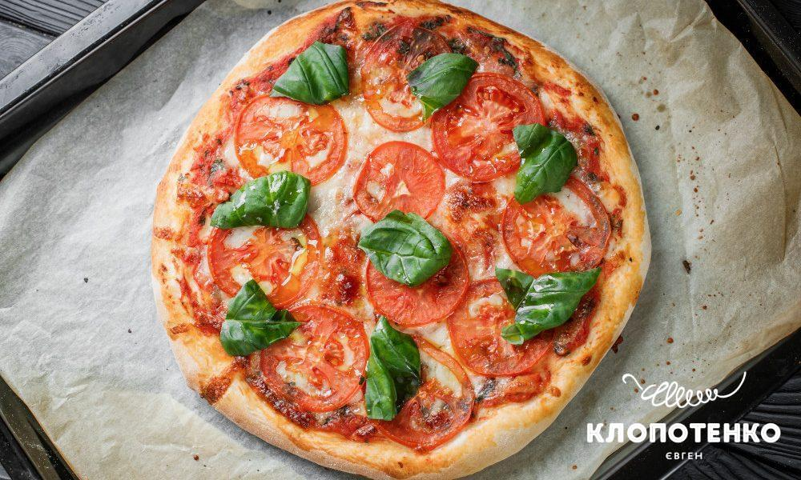
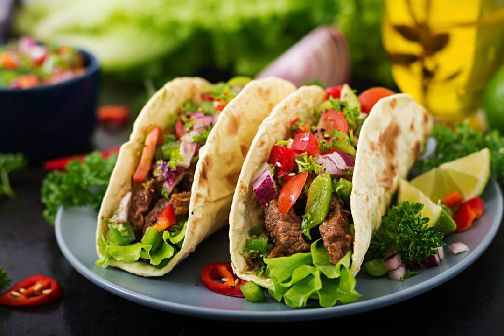
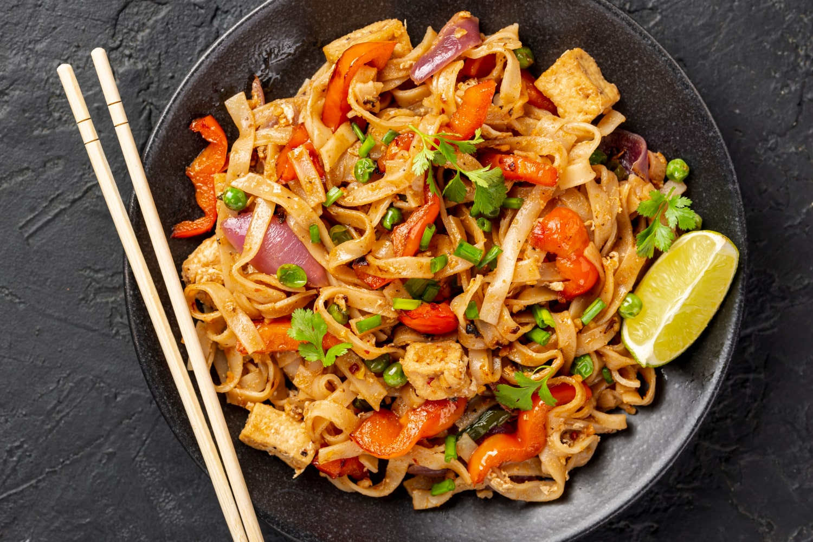
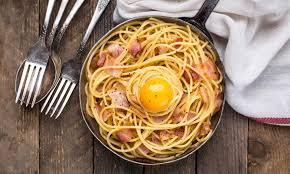
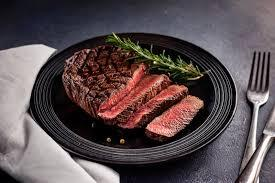
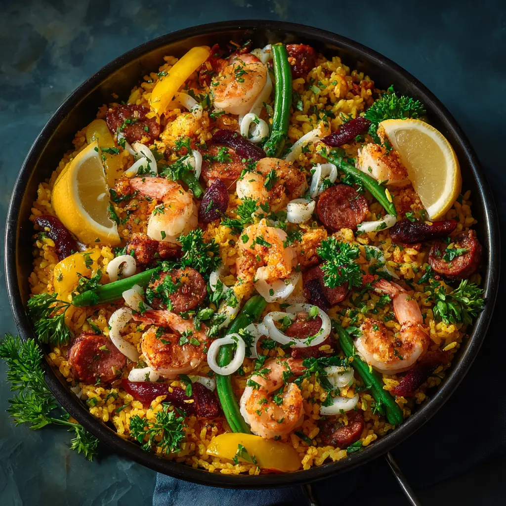
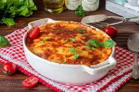

Піца Маргарита (Італія)
Абсолютна класика. Тонке хрустке тісто, насичений томатний соус, ніжна моцарела та свіжі листочки базиліку. Простота, яка підкорила світ.

Суші та Роли (Японія)
Елегантна вечеря з ідеально звареного рису, свіжої риби, морепродуктів та водоростей норі. Подається з соєвим соусом, васабі та імбиром.

Тако (Мексика)
Яскравий смак Мексики. М'які або хрусткі тортильї з начинкою із соковитого м'яса, пікантної сальси, гуакамоле, кінзи та лайма.

Пад Тай (Таїланд)
Смажена рисова локшина з креветками або куркою, яйцем, паростками квасолі, арахісом та неймовірно збалансованим кисло-солодким тамариндовим соусом.
.jpg)
Butter Chicken (Індія)
Шматочки ніжного курячого філе, мариновані в йогурті, подаються в густому, ароматному вершково-томатному соусі з традиційними індійськими спеціями.

Паста Карбонара (Італія)
Справжня Карбонара готується без вершків: лише гаряча паста, хрустке гуанчіале (або панчета), жовтки, сир Пекоріно Романо та багато чорного перцю.

Стейк (Франція)
Ідеально просмажений яловичий стейк (найчастіше рібай або стриплойн) у поєднанні з хрусткою, золотистою картоплею фрі та перцевим соусом.

Рамен (Японія)
Зігріваючий суп із наваристим м'ясним бульйоном, пружною пшеничною локшиною, скибочками свинини (тясю), зеленим цибулею та маринованим яйцем з рідким жовтком.

Паелья (Іспанія)
Святкова страва з Валенсії. Золотистий рис, забарвлений шафраном, готується на великій сковороді з морепродуктами, куркою, кроликом та свіжими овочами.

Мусака (Греція)
Ситна листкова запіканка. Скибочки смажених баклажанів та картоплі чергуються з пряним фаршем (яловичина або баранина) і заливаються густим соусом бешамель.